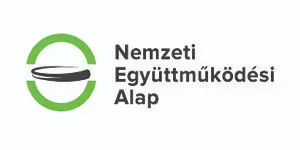
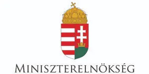
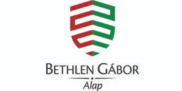
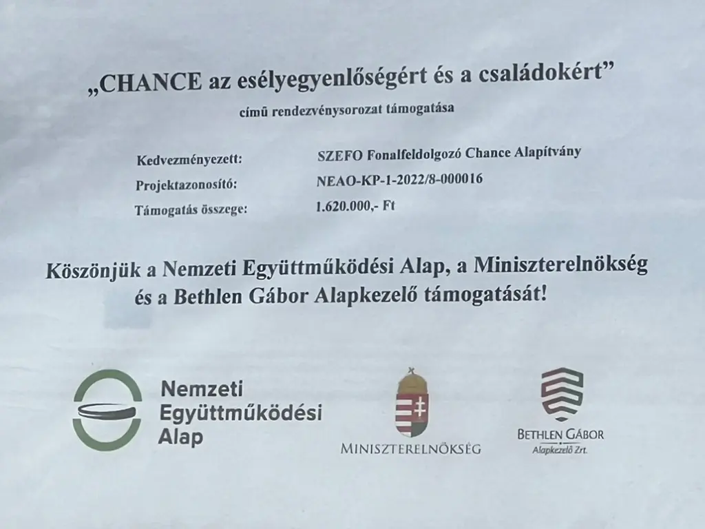

NEAO-KP-1-2022/8-000016 azonosítójú „CHANCE az esélyegyenlőségért és családokért” pályázati program
2022. április 1. és 2023. március 31. között esélyegyenlőségi, érzékenyítő,
kulturális és családi programsorozatot szervezett az Alapítvány a Nemzeti
Együttműködési Alap támogatásával a NEAO-KP-1-2022/8-000016 azonosítószámú
„CHANCE az esélyegyenlőségért és családokért” pályázati program keretében.
A különböző programokon a Szegedi SZEFO zrt. fogyatékossággal élő, illetve
egészségkárosodott, megváltozott munkaképességű munkavállalói vettek részt,
továbbá ép munkavállalói, a családi és kulturális rendezvényen pedig
családtagok, hozzátartozók is.
A projekt fő célkitűzése a Szegedi SZEFO zrt. megváltozott munkaképességű
munkavállalóinak társadalmi-munkahelyi integrációjának elősegítése,
életminőségük, munkahelyi jóllétük javítása, esélyegyenlőség megteremtése
és hosszú távú fenntartása.
E célok elérésének egyik feltétele, hogy a munkahelyi környezeten kívül
közösségi, illetve szakmai programokon is részt vehessenek a megváltozott
munkaképességű emberek közösen ép munkatársaikkal, hozzátartozókkal és
családtagokkal. Ez lehetővé teszi egymás jobb megismerését és egymás
értékeinek felismerését, egymás jobb elfogadását.
A Szegedi SZEFO zrt. ép munkavállalóinak befogadó attitűdjét, szemléletmódját
érzékenyítő és szemléletformáló tréningeken fejlesztette a tréningek szakmai
megvalósítója, a Vakok és Gyengénlátók Csongrád-Csanád Megyei Egyesülete
szociális munkás és mentálhigiénés szakembere, tapasztalati szakértője.
Programok, tevékenységek
Kulturális rendezvény – színházlátogatás
2022. augusztus 12-én összesen 100 fő, fogyatékossággal élő, megváltozott
munkaképességű, szociálisan hátrányos helyzetű személyek és kísérőik,
hozzátartozóik vettek részt a Mórahalmi Patkó Lovas és Szabadtéri Színház
Rómeó és Júlia című előadásán.
A résztvevők Mórahalomra eljutását, autóbusszal történő szállítását
a szegedi székhelyről, illetve vidéki fióktelepekről a projekt-támogatásból
szervezte az Alapítvány, így azok is eljuthattak a színvonalas színházi
előadásra, akik ezt önállóan, önerőből nem vagy csak nehezen tudták volna
megoldani. A színházjegyekhez tartozó, mórahalmi gyógyfürdőbe szóló ingyenes
strandbelépő sok család szabadidős kikapcsolódását is segítette.
Helyszín
Mórahalmi Patkó Lovas és Szabadtéri Színház
Előadás
Rómeó és Júlia
Résztvevők száma
100 fő
Érzékenyítő és szemléletformáló foglalkozások
2022. november 7-24. között összesen 159 fő részvételével zajlottak
szemléletformáló és érzékenyítő foglalkozások a Szegedi SZEFO zrt.
székhelyén (Szeged, Tavasz utca), telephelyén (Szeged, Bérkert utca)
és 4 fióktelepén (Szentesen, Hódmezővásárhelyen, Apátfalván, Orosházán).
Az érzékenyítő tréning keretében látássérült és értelmi fogyatékossággal
élő munkavállalók munkahelyi nehézségeivel, beilleszkedési problémáival,
élethelyzetével ismerkedhettek a résztvevők: nem megváltozott munkaképességű
munkavállalók, főként telep-, üzem- és csoportvezetők különböző
fogyatékossági csoportok néhány képviselőjének bevonásával.
A program szakmai tanácsadó partnere a Vakok és Gyengénlátók Csongrád-Csanád
Megyei Egyesülete szakemberei, tapasztalati szakértői voltak, akik
szakértelmükkel és jelentős szakmai tapasztalatukkal járultak hozzá
a tréningek eredményességéhez.
A foglalkozások célja az volt, hogy a résztvevőkben csökkenjenek
a megváltozott munkaképességű emberekkel szembeni előítéletek, bővüljenek
a fogyatékossággal élő emberekkel kapcsolatos ismereteik, megismerjék
a fogyatékossággal élő személyekkel való kommunikáció speciális formáit,
fejlődjön elfogadói, befogadói attitűdjük, változzon szemléletük. Az
elsajátított ismereteket a későbbiekben munkájuk során is alkalmazni
tudják, mely segíti a csapatmunkát és együttműködést, javítja a munkahelyi
hatékonyságot, elősegíti a befogadó, sokszínű munkahelyi kultúra
kialakulását.
Vakok és Gyengénlátók Csongrád-Csanád Megyei Egyesülete
Résztvevők száma
159 fő
Mikulás-napi ünnepség, családi nap
2022. december 2-án került megrendezésre az Alapítvány szervezésében
a Szegedi SZEFO zrt.-nél immár hagyománnyá vált Mikulás-ünnepség, mely
egyúttal a SZEFO Chance Alapítvány „CHANCE az esélyegyenlőségért és
a családokért” című projektjének záró családi-napi rendezvénye is volt.
A központi Mikulás-ünnepséget és családi programot a Szegedi SZEFO Zrt.
Tavasz utcai székhelyén tartottuk, de a vidéki fióktelepeken is szerveztek
kisebb Mikulás-ünnepséget. A családi rendezvényen a kisgyermekes
munkavállalók és 0–12 éves korú gyermekeik, továbbá nem kisgyermekes
érdeklődő munkavállalók vettek részt, ugyanakkor az ünnepségeken részt
venni nem tudó munkavállalók gyermekei számára is átadásra került
a számukra elkészített ajándékcsomag.
Összesen 159 gyermek kapott Mikulás-csomagot, melyek az édességek mellett
egyéb meglepetéseket, kis játékokat, kifestőket, könyveket is rejtettek.
Helyszínek
Szeged (Tavasz utca), Orosháza (Könd utca 76.), Szentes (Szarvasi út 4.), Hódmezővásárhely (Erzsébeti út 8.), Apátfalva (Templom utca 67.), Sárrétudvari (Széchenyi út 2/1.)
Ajándékcsomagot kapott gyermekek száma
159 fő
Köszönetnyilvánítás
Köszönjük a Nemzeti Együttműködési Alap, a Miniszterelnökség és
a Bethlen Gábor Alapkezelő támogatását!

Nemzeti Együttműködési Alap

Miniszterelnökség

Bethlen Gábor Alapkezelő

A program támogatói táblája
Képgaléria
Kapcsolódó képek
A „CHANCE az esélyegyenlőségért és családokért” program eseményein
– a színházlátogatáson, az érzékenyítő foglalkozásokon és a Mikulás-napi
családi napon – készült képek.